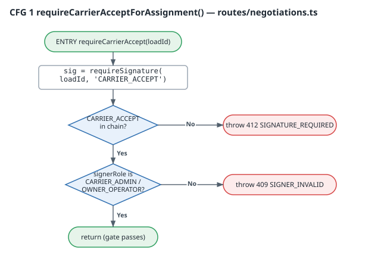
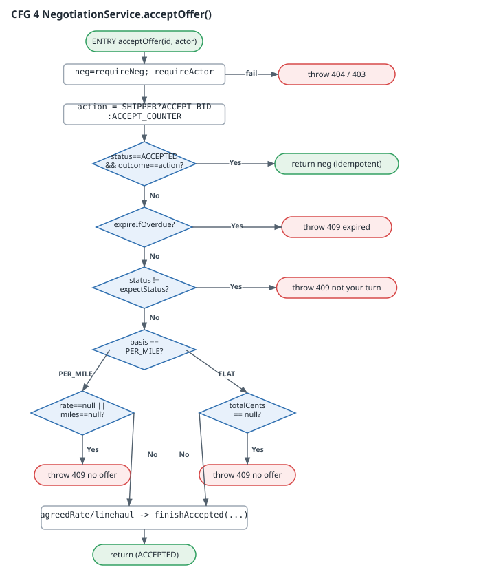
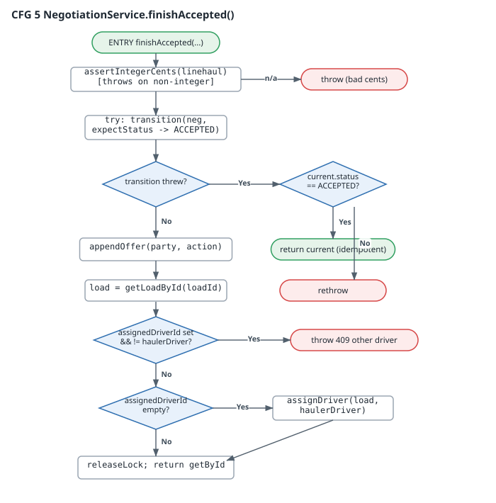
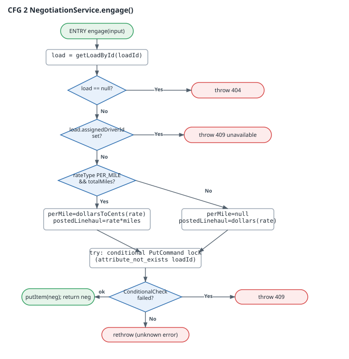
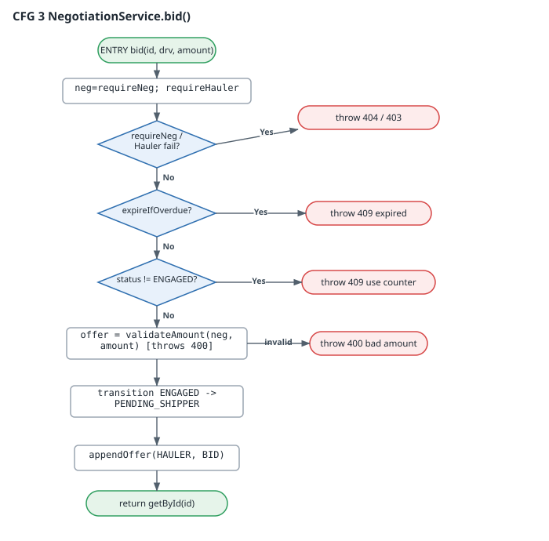

Team: Platform Engineering Date: 2026-07-03 Branch: platform/SCRUM-248-esign-at-assign
Scope: backend/src/services/negotiationService.ts + the negotiation route gate in backend/src/routes/negotiations.ts
Status: analysis only — no production change; the code under test is the branch build, not deployed.
Three coverage criteria are relevant, in increasing strength:
| Criterion | Question it answers | Tool |
|---|---|---|
| Statement | Was each line executed at least once? | v8 (empirical) |
| Branch | Was each side of every decision taken? | v8 (empirical) |
| Basis path | Was each linearly independent path through the function exercised? | McCabe analysis (this report) |
Path coverage is the strongest of the three. Full path coverage (every combination of branches) is infeasible for any function with a loop, so the industry-standard proxy is basis-path coverage: the set of linearly independent paths whose size equals the cyclomatic complexity V(G). Covering the basis set guarantees every statement and every branch is covered, and that no independent decision outcome was skipped.
For each target function we (a) build its control flow graph (CFG), (b) compute V(G), (c) enumerate the basis paths, and (d) map each path to the unit test that exercises it. Empirical v8 numbers back the manual analysis.
V(G) is computed two independent ways as a cross-check:
V(G) = E − N + 2 (one connected component).V(G) = (number of decision predicates) + 1.Both agree for every function below.
Measured by running the two negotiation suites (negotiation.test.ts + the new negotiationEsign.test.ts, 27 tests, all green) with the v8 coverage provider, scoped to the two files:
| File | % Stmts | % Branch | % Funcs | % Lines |
|---|---|---|---|---|
services/negotiationService.ts |
77.8 | 66.3 | 97.1 | 85.9 |
routes/negotiations.ts |
51.9 | 35.0 | 68.2 | 57.1 |
| Combined | 67.2 | 54.9 | 86.0 | 73.9 |
The route file reads lower because the suites are predominantly service-level: they call NegotiationService methods directly and only reach the HTTP layer for the e-sign gate. The uncovered route lines are the notification helper, the viewFor action-list branches, and the two long-poll GET handlers — all of which are exercised by the Task 3 end-to-end suite, not by unit tests. The two coverage efforts are complementary by design.
Basis-path coverage of the nine state-machine functions:
| Function | V(G) |
Basis paths | Paths covered | Path coverage |
|---|---|---|---|---|
engage |
6 | 6 | 5 | 83% |
acceptLoad |
4 | 4 | 4 | 100% |
bid |
5 | 5 | 5 | 100% |
counter |
6 | 6 | 5 | 83% |
acceptOffer |
9 | 9 | 8 | 89% |
reject |
5 | 5 | 4 | 80% |
expireIfOverdue |
4 | 4 | 2 | 50% |
finishAccepted |
7 | 7 | 6 | 86% |
requireCarrierAcceptForAssignment (new) |
3 | 3 | 3 | 100% |
| Total | — | 49 | 42 | 86% |
The new e-sign gate lands at 100% basis-path coverage (all three paths asserted by the new suite). Seven basis paths across the pre-existing state machine remain uncovered; §5 lists each with a course of action. None of them is a correctness defect — they are concurrency-race fall-throughs, config-gated dead branches, and "should-be-impossible" defensive guards.
requireCarrierAcceptForAssignment() — the new e-sign gate V(G) = 3
| # | Basis path | Outcome | Covered by |
|---|---|---|---|
| P1 | no CARRIER_ACCEPT in chain | 412 SIGNATURE_REQUIRED | accept-load 412s when no signature exists |
| P2 | signature present, signer role not a carrier | 409 SIGNER_INVALID | a CARRIER_ACCEPT signed by a non-carrier role is rejected (409) |
| P3 | signature present, carrier signer | pass → assign | accept-load succeeds once a carrier-signed CARRIER_ACCEPT is present |
Path coverage: 3/3 (100%). The suite also proves the gate is applied to all three assigning routes (hauler accept-load, hauler accept-counter, shipper accept-bid) and to none of the non-assigning ones (bid, counter, reject) — the "signature required exactly at assignment" invariant.
acceptOffer() — the accept transition V(G) = 9
| # | Basis path | Covered by |
|---|---|---|
| P1 | requireNeg/requireActor fails → 404/403 |
turn-enforcement + actor guards |
| P2 | already ACCEPTED with same outcome → idempotent return | a repeated accept does not assign twice |
| P3 | window overdue → 409 expired | an action after the deadline expires… |
| P4 | not this party's turn → 409 | turn enforcement: hauler cannot act on shipper turn… |
| P5 | PER_MILE, offer present → finishAccepted | bid then shipper accept assigns at the hauler rate |
| P6 | PER_MILE, no offer on table → 409 | uncovered (see §5) |
| P7 | FLAT_TOTAL, offer present → finishAccepted | a FLAT_RATE load negotiates in flat totals… |
| P8 | FLAT_TOTAL, no offer on table → 409 | a PER_MILE load rejects a totalCents offer (unit-safety guard) |
| P9 | hauler accept-counter → finishAccepted (ACCEPT_COUNTER) | bid, shipper counter, hauler accept-counter… |
Path coverage: 8/9 (89%).
finishAccepted() — the single assignment chokepoint V(G) = 7
| # | Basis path | Covered by |
|---|---|---|
| P1 | non-integer linehaul → assert throws | integer-cents invariant tests |
| P2 | conditional transition wins → assign | assigns at the posted rate… / bid then shipper accept… |
| P3 | transition throws, current already ACCEPTED → idempotent return | a repeated accept does not assign twice |
| P4 | transition throws, not ACCEPTED → rethrow | expiry race (an action after the deadline…) |
| P5 | load already assigned to this hauler → skip re-assign (idempotent) | idempotency suite |
| P6 | load unassigned → assignDriver |
the Load model is never written… (only assignDriver on accept) |
| P7 | load assigned to a different driver → 409 defensive guard | uncovered (see §5) |
Path coverage: 6/7 (86%).
engage() — atomic lock acquisition V(G) = 6
Covered: load-not-found (404), already-assigned (409), PER_MILE rate snapshot (snapshots the posted rate in integer cents), FLAT posted-linehaul (a FLAT_RATE load negotiates…), and the concurrent-lock race (two haulers engaging the same load concurrently: one negotiation, one clear 409). Uncovered: the rethrow of a *non-*ConditionalCheckFailed error from the lock PutCommand (5/6, see §5).
bid() — hauler's first offer V(G) = 5
All five basis paths covered: expiry (409), wrong-status "use counter" (409), invalid amount (a non-positive or non-integer bid is rejected), the PER_MILE happy path, and the FLAT happy path. Path coverage: 5/5 (100%).
Seven basis paths (14% of the state machine) are unexercised. Each is characterized below with a concrete COA. All are additive test work; none requires a code change.
| # | Function | Uncovered path | Why it is uncovered | COA |
|---|---|---|---|---|
| U1 | engage |
non-conditional error from the lock PutCommand rethrown |
requires the SDK to throw a non-ConditionalCheckFailed error |
COA-A: add a unit test that mocks docClient.send to reject with a generic error; assert it propagates (not swallowed as 409). |
| U2 | counter |
maxRounds cap reached → 409 |
NEGOTIATION_POLICY.maxRounds = 0 disables the cap, so the branch is currently unreachable by config |
COA-B: parametrize the test to set maxRounds = 2 and assert the cap fires. Track as config-gated dead code until/unless round caps are enabled. |
| U3 | acceptOffer |
PER_MILE accept with no offer on the table → 409 | no test accepts before any bid on a PER_MILE load | COA-C: add a test: engage → accept-offer (shipper) with currentOffer == null → expect 409 "no offer". |
| U4 | reject |
reject after the window already expired (lazy-expire branch) | reject tests run inside the window | COA-D: add a test that advances the clock past deadlineAt, then rejects; assert the already-rebroadcast negotiation is returned. |
| U5–U6 | expireIfOverdue |
(a) already-EXPIRED early return; (b) concurrent-transition catch fall-through |
both are concurrency races the single-threaded unit tests don't reproduce | COA-E: add tests that (a) call expireIfOverdue twice and assert the second is a no-op, and (b) simulate a losing conditional-write (transition throws AppError) and assert it still reports expired. |
| U7 | finishAccepted |
load already assigned to a different driver → 409 | a "should-be-impossible while holding the lock" guard | COA-F: add a test that pre-seeds the load with a foreign assignedDriverId and asserts the 409, proving the guard is live. |
Aggregate COA: implementing COA-A…F adds 7 tests and lifts the state machine to 100% basis-path coverage (49/49). Estimated effort: ~0.5 day. Recommended priority: U3, U7 first (they assert real user-reachable safety guards), then U5–U6 (concurrency correctness), then U1/U4 (defensive), then U2 (config-gated, lowest).
Recommendation: accept the branch on its merits; schedule the 7-test COA batch (§5) as a fast-follow to reach 100% basis-path coverage before the negotiation feature exits beta.
cd backend
../node_modules/.bin/vitest run \
tests/unit/payments/negotiation.test.ts tests/unit/payments/negotiationEsign.test.ts \
--coverage --coverage.provider=v8 \
--coverage.include='src/services/negotiationService.ts' \
--coverage.include='src/routes/negotiations.ts' \
--coverage.reporter=text
The five SVG CFGs and complexity.json are emitted by the zero-dependency generator
docs/overnight-2026-07-03/cfg/gen_cfg.py (python3 gen_cfg.py). Graphviz DOT for the
new gate, for reviewers who prefer dot:
digraph requireCarrierAcceptForAssignment {
rankdir=TB; node [fontname="monospace"];
entry [shape=box, style=rounded, label="ENTRY requireCarrierAccept(loadId)"];
reqsig [shape=box, label="sig = requireSignature(loadId,'CARRIER_ACCEPT')"];
d1 [shape=diamond, label="CARRIER_ACCEPT in chain?"];
e412 [shape=box, color="red", label="throw 412 SIGNATURE_REQUIRED"];
d2 [shape=diamond, label="signerRole is CARRIER_ADMIN / OWNER_OPERATOR?"];
e409 [shape=box, color="red", label="throw 409 SIGNER_INVALID"];
ok [shape=box, style=rounded, color="green", label="return (gate passes)"];
entry -> reqsig -> d1;
d1 -> e412 [label="No"]; d1 -> d2 [label="Yes"];
d2 -> e409 [label="No"]; d2 -> ok [label="Yes"];
}